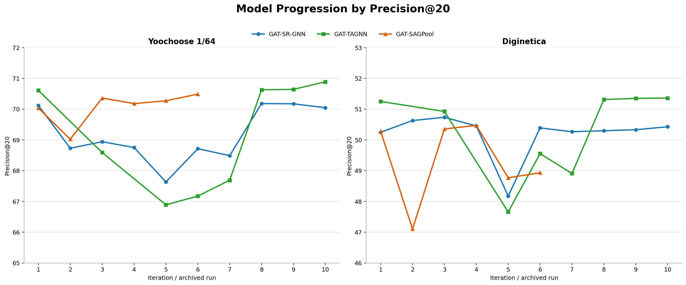
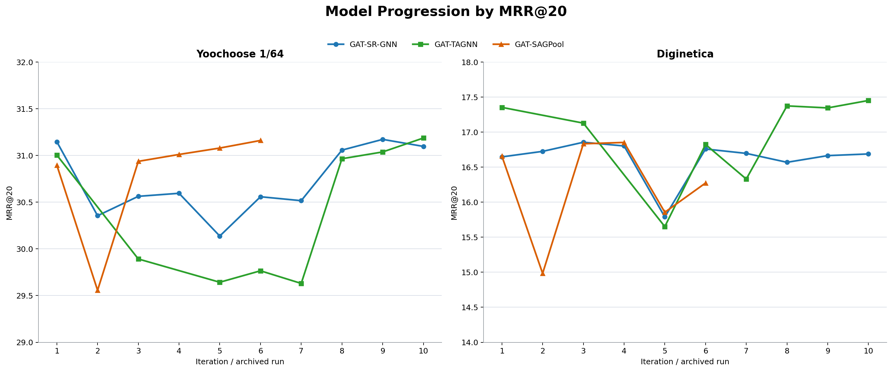
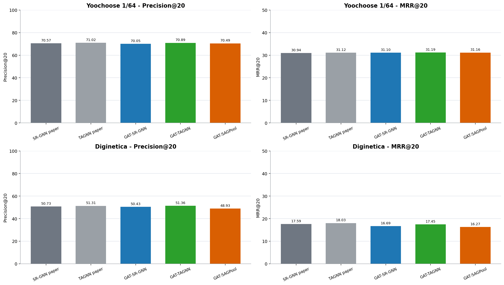

Graph Attention Networks for Session-Based Recommendation
Investigating whether GAT encoders can replace GGNN propagation in graph-based next-item recommendation.
Predict the next item in a short anonymous session
In session-based recommendation, the system does not know who the user is or what they usually like. It only sees the current click sequence and must produce a ranked list of items that are likely to be clicked next.
Short sessions contain weak, noisy signals
No stable profile
The same person may appear as a new anonymous session, so the model cannot depend on long-term history.
Order matters
A recent click can be more important than an older one because it often reflects the current intent.
Not all clicks matter
Some transitions are accidental or weak. A useful model should learn which item relations are important.
Represent the session as an item-transition graph
- Nodes are unique items in the session.
- Directed edges are observed click transitions.
- Repeated transitions can become stronger edge signals.
- The graph keeps the order signal while also showing how items are connected inside the session.
A sequence says “what came next.” A graph also lets repeated or connected item transitions influence the learned representation.
Two graph-based baselines anchor the study
Local and global session preference
Builds item embeddings with GGNN propagation, then combines the last clicked item with an attention-weighted summary of the whole session.
Target-aware session preference
Also starts with graph propagation, but changes the session representation for each candidate item being scored.
Both papers use graph-based session modeling. This study keeps their high-level idea and replaces the graph encoder with GAT.
What happens if GGNN propagation is replaced by GAT?
- Does attention-based graph encoding improve next-item recommendation?
- Does the effect depend on the readout after graph encoding?
- Can a fully attention-based GAT + SAGPool design compete with the reference architectures?
The key point is controlled comparison: change the graph encoder, keep the task, datasets, and evaluation metrics aligned with the papers.
GAT learns which neighboring items deserve more attention Velickovic et al., 2018 arXiv:1710.10903
GGNN-style propagation
Messages are passed through graph edges using recurrent gated updates.
GAT-style propagation
Messages are still passed through graph edges, but the model learns attention weights over neighboring items.
The practical hypothesis: attention can focus an item embedding on the most useful neighboring clicks instead of treating every transition as equally useful.
Shared GAT encoder used by the final models
Encoder design
- One node per unique session item
- Forward and backward transition channels
- One `GATConv` layer per direction
- 4 attention heads, hidden size 100
- Plain residual update after GAT
Edge features
- Transition probability
- Repeat strength
- Recency
- `edge_dim=3`
- Attention dropout 0.05, feature dropout 0.10
The same GAT encoder is shared by the final SR-GNN-style and TAGNN-style branches, which makes their readout comparison easier to interpret.
SAGPool summarizes a graph by keeping its most important nodes Lee et al., 2019 arXiv:1904.08082
What it does
- Assigns an importance score to each node in the session graph.
- Keeps only the top-scoring nodes.
- Aggregates the remaining nodes into one graph-level session representation.
Why test it here
- SR-GNN and TAGNN are established graph-session architectures.
- SAGPool gives a different way to turn item nodes into a session vector.
- It lets us test a more fully attention-based pipeline: GAT for encoding, SAGPool for summarization.
In this study, SAGPool is exploratory. It is not a direct reproduction of SR-GNN or TAGNN, but a third branch that asks whether attention-based graph pooling can compete with their hand-designed session readouts.
Three readouts test where GAT helps
GAT-SR-GNN
GAT encoder with SR-GNN-style local plus global session readout.
GAT-TAGNN
GAT encoder with target-aware readout, so the session vector depends on each candidate.
GAT-SAGPool
GAT encoder with self-attention graph pooling and explicit last-click preservation.
Evaluation follows the reference studies
For each test example, the model scores candidate items and sorts them from most to least likely. Precision@20 asks whether the true next item is anywhere in the top 20; MRR@20 also rewards placing it near the top of that list.
Sessions shorter than two interactions and rare items are filtered, then each session is converted into prefix-target examples for next-item prediction.
Precision@20 across model iterations

MRR@20 across model iterations

Design changes became simpler after failed complex variants
- Iteration 1 established the first complete GAT replacement for SR-GNN and TAGNN.
- Iteration 5 added gated normalization and edge-attribute changes, but performance dropped.
- Iteration 8 restored the stronger weighted `GATConv` design.
- Iteration 10 kept the readouts fixed and added three interpretable edge features: probability, repeat strength, and recency.
Paper baselines and final GAT architectures side by side

What the result chart shows
- The main comparison uses iteration 10 for GAT-SR-GNN and GAT-TAGNN, and `results-newest` for GAT-SAGPool.
- Precision@20 and MRR@20 should be read together: one measures hit rate, the other measures rank quality.
- GAT-TAGNN is the most competitive final GAT variant across the two datasets.
- SAGPool is a useful exploratory branch, but it does not consistently beat the established readouts.
Use final selected architectures for the main story
- Presenting one final architecture per model avoids cherry-picking different historical runs.
- Use iteration 10 for GAT-SR-GNN and GAT-TAGNN because both share the same final GAT encoder.
- Use `results-newest` for GAT-SAGPool when presenting the final shared-edge SAGPool variant.
- Historical best rows belong in the progression discussion, not the headline comparison.
GAT helps most when the readout is target-aware
- GAT-TAGNN is the strongest final GAT branch overall.
- It slightly exceeds TAGNN paper Precision@20 on Diginetica and MRR@20 on Yoochoose.
- GAT-SR-GNN remains close to SR-GNN, but it does not clearly improve the original paper baseline.
- GAT-SAGPool is competitive on Yoochoose, but weaker on Diginetica in the final run.
This suggests that better graph encoding is useful, but the downstream session representation controls how much of that signal reaches the final ranking.
Main takeaways
- Replacing GGNN with GAT is feasible in graph-based session recommendation.
- The encoder alone is not the full answer: readout design strongly controls the outcome.
- The best final direction is GAT encoding paired with TAGNN-style target-aware scoring.
- More attention components do not automatically improve results, as SAGPool shows.